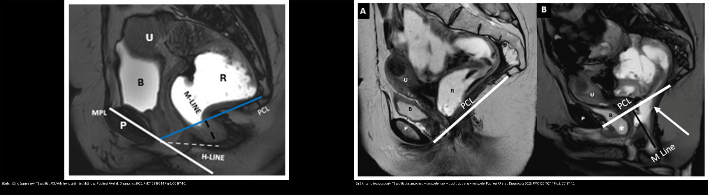
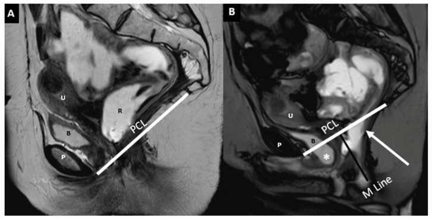
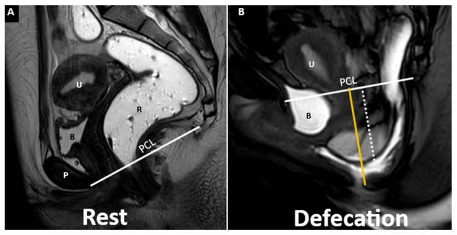
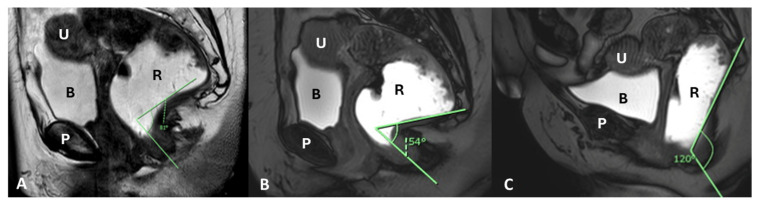
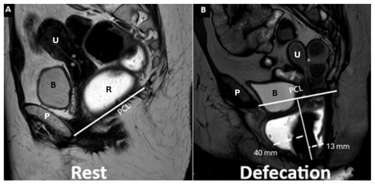

545 — MR động học sàn chậu: sa theo khoang & đường PCL/H/M / MR Defecography
Tags: pattern:sa-san-chau vung:tieu-khung score:PCL protocol:MR-defecography
Mức chắc chắn (certainty): tổng hợp y văn (literature synthesis) — nhóm tự biên từ y văn mở + ca nguyên văn trong bài gốc (ghi rõ Fig), chưa gắn bệnh án riêng.
1. Tổng quan — sa sàn chậu là bệnh "động", đo bằng 3 đường tham chiếu
- Sa sàn chậu (pelvic organ prolapse): các tạng chậu (bàng quang, tử cung/đỉnh âm đạo, trực tràng) tụt xuống dưới sàn chậu vì yếu cân-mạc nâng (levator ani) + cân chậu (endopelvic fascia) sau sinh nở/mãn kinh/phẫu thuật. Chỉ số PCL (pubococcygeal line — đường mu-cụt) là mốc cứng: nối bờ dưới khớp mu → khớp cụt cuối cùng.
- Bệnh chỉ lộ khi TỐNG PHÂN (evacuation): thì nghỉ (rest) có thể hoàn toàn bình thường — bài gốc nói thẳng "thì tống phân cần thiết để lộ hết mức rối loạn sàn chậu" (PMC12249214). Vì vậy LLCN chuẩn là 4 thì động: nghỉ → ép (squeeze) → rặn/đẩy (straining) → tống phân.
- TẠI SAO phải T2 sagittal nhanh (single-shot / BTFE / SSFSE): sàn chậu là mô mềm (cơ, cân, niêm mạc) → T2 giải phẫu cơ tốt nhất + chuỗi nhanh cho phép chụp thời gian thực 1–2 hình/giây suốt động tác tống phân; MR không dùng tia X và xem được cả 3 khoang + cơ trong một lần, khác X-quang động học (fluoroscopic defecography) chỉ thấy cột thuốc tương phản trong trực tràng.
- 3 đường tham chiếu (đo trên lát T2 cắt dọc giữa):
- PCL: bờ dưới khớp mu → khớp cụt cuối — tạng tụt xuống dưới PCL = sa, đo bằng cm dưới PCL.
- H line (đường lỗ hoành): khớp mu → mặt sau chỗ nối hậu môn-trực tràng (anorectal junction, ARJ) — phản ánh bề ngang lỗ cơ hoành (levator hiatus), bình thường < 6 cm.
- M line (đường sàn cơ): ARJ (mặt sau) → khớp cụt cuối — phản ánh mức hạ của sàn cơ, bình thường < 2 cm; H/M tăng khi sàn chậu giãn-hạ.
- Phân độ hạ tạng so với PCL (áp dụng cho cả 3 khoang): độ 0 = trên PCL; độ 1 = hạ < 3 cm**; **độ 2 = 3–6 cm**; **độ 3 = > 6 cm dưới PCL (theo Wadhwani, Cureus 2023 — ca Fig. 2: sa tử cung độ 3, trực tràng vừa-nặng).
- Góc hậu môn-trực tràng (anorectal angle, ARA): góc giữa trục sau trực tràng và trục ống hậu môn, nghỉ 90–130° (ca bài gốc 81°) → ép thu hẹp (ca: 54°) → tống phân mở rộng (ca: 120°, ARJ tụt 6 cm). TẠI SAO: cơ mu-trực tràng (puborectalis) giãn ra khi tống phân làm góc mở; cơ co nghịch lý → góc không mở/hẹp lại = anismus (nên gọi là "loạn vận động tống phân", không phải sa để mổ).
2. Mẫu hình + chẩn đoán phân biệt theo khoang (Gamut)
Gamut theo 3 khoang + 1 khoang "ảo" (cul-de-sac/ổ túi cùng):
- Khoang trước (anterior — bàng quang/niệu đạo): cystocele (sa bàng quang), urethrocele, cystourethrocele.
- Khoang giữa (middle — tử cung/cổ tử cung/âm đạo): sa tử cung (hysterocele), sa đỉnh âm đạo (elitrocele/vault prolapse sau cắt tử cung).
- Khoang sau (posterior — trực tràng/hậu môn): rectocele (phồng thành trước trực tràng), lồng trực tràng (intussusception) / sa trực tràng ra ngoài, phân bố túi cùng muộn.
- Khoang ảo / ổ túi cùng (cul-de-sac): enterocele (túi phúc mạc chứa quấn ruột non/sigma sa xuống giữa trực tràng–âm đạo), sa sàn lan tỏa thoát vị toàn sàn.
- Nhóm KHÔNG có sa (rối loạn chức năng): anismus / loạn vận động tống phân (táo bón tống phân khó mà không sa tạng) — đừng mổ; hội chứng loét trực tràng đơn độc (SRUS) thường đi kèm lồng trực tràng.
- Gợi nhớ theo trình tự đọc: (1) cân chỉnh PCL → (2) H, M line → (3) hạ tạng nào dưới PCL → (4) ARA đóng/mở → (5) có ruột non trong túi cùng không.
3. Bảng so sánh phân biệt (ma trận đối chiếu)
| Thực thể (entity) | Hình ảnh điển hình (T2 sagittal động) | Chốt vào (rule-in) | Chốt loại (rule-out) | Gợi ý xác nhận |
|---|---|---|---|---|
| Cystocele (khoang trước) | Bàng quang tụt xuống dưới đường PCL thì rặn/tống phân | Đáy bàng quang hạ > 3 cm dưới PCL (độ 2) | Bàng quang còn trên PCL mọi thì → không sa khoang trước | Đo cm dưới PCL; ± niệu quyển/urethrocele |
| Sa tử cung / đỉnh âm đạo (khoang giữa) | Cổ tử cung hoặc đỉnh âm đạo hạ dưới PCL | Hạ > 3 cm dưới PCL; sau cắt tử cung = sa đỉnh âm đạo | Cổ tử cung dài nhưng đỉnh trên PCL → không sa thật | Hysterocele/elitrocele; phân độ 1–3 |
| Rectocele (khoang sau) | Phồng thành trước trực tràng khi tống phân (ca Fig. 11: trước 40 mm, sau 13 mm) | Lồi > 2 cm (đo từ vị trí thành dự kiến) | Lồi < 2 cm thường không triệu chứng | Đo mm; tống phân bắt buộc để lộ |
| Enterocele (khoang ảo) | Túi phúc mạc chứa quấn ruột non tụt giữa trực tràng–âm đạo | Thấy vòng ruột non xuống dưới PCL | Không thấy ruột non → chỉ là sa trực tràng/rectocele | Cần thì tống phân; cần cản quang ruột non |
| Lồng trực tràng / sa trực tràng | Niêm mạc/trực tràng lồng vào lòng hoặc thò ra ngoài hậu môn | Đầu lồng vào ống hậu môn (độ 2) hoặc ra ngoài (độ 3) | Chỉ phồng thành khu trú → rectocele, không phải lồng | Phân độ Oxford I–III |
| Anismus (rối loạn chức năng) | ARA không mở / hẹp lại nghịch lý khi tống phân; sàn chậu không hạ | ARA nghịch lý + không hạ tạng dù rặn hết sức | ARA mở + hạ tạng theo khoang → sa thật | Đo áp lực hậu môn (manometry), EMG |

Trái: thì ép — ARJ ngang PCL, H/M line trong giới hạn, không sa. Phải: thì tống phân — sa cả 3 khoang, cystocele (sao) + sa trực tràng + rectocele. Nguồn: Pugliesi RA et al., Diagnostics 2025, PMC12249214 Fig. 8 + Fig. 9, CC BY 4.0.Dấu hiệu cần đọc đúng trên chuỗi động
- PCL/H/M line (ca Fig. 1, PMC10825726): PCL đỏ = mốc sa tạng; H line ≤ 6 cm (lỗ cơ hoành), M line ≤ 2 cm (hạ sàn cơ) — H/M giãn rộng = sàn chậu mất nâng đỡ.
- Góc hậu môn-trực tràng (Fig. 7, PMC12249214): 81° nghỉ → 54° khi ép → 120° khi tống phân, ARJ tụt 6 cm — góc phải MỞ khi tống phân.
- Rectocele (Fig. 11): đo từ vị trí thành dự kiến, trước 40 mm / sau 13 mm — dạng anterior + posterior cùng lúc.
4. Protocol + hệ phân độ/điểm chuẩn hóa
- Chỉ định: táo bón tống phân khó/đau hậu môn, cảm giác "tắc nghẽn đường ra" (obstructed defecation), sa tạng chậu, đánh giá trước-sau mổ sa/treo (sacropexy, rectopexy).
- Chuẩn bị: nhịn ăn ngắn, làm trống bàng quang; bơm gel siêu âm/cản quang vào trực tràng ~120–300 mL để kích thích phản xạ tống phân + làm trực tràng căng (bài gốc dùng gel trực tràng); ± cản quang uống đánh dấu ruột non nếu nghi enterocele.
- Chuỗi xung (bài gốc PMC12249214): định vị lát cắt dọc giữa T2 TSE (nghỉ — đo PCL/H/M) → T2 nhanh single-shot/BTFE thời gian thực liên tục suốt ép (squeeze) → rặn/đẩy → tống phân (evacuation); lát 5–6 mm, trường nhìn từ khớp mu đến xương cụt + gồm cả tầng sinh môn (không che mất ARJ).
- Tư thế: nằm ngửa (máy kín) hoặc ngồi trên máy hở — tư thế ngồi lộ sa nhiều hơn (tương đương fluoroscopy) nhưng ít máy; nằm ngửa có thể âm tính giả.
- Hệ phân độ: hạ tạng so với PCL độ 0 (< PCL) / 1 (< 3 cm) / 2 (3–6 cm) / 3 (> 6 cm); H line ≤ 6 cm và M line ≤ 2 cm là ngưỡng bình thường; ARA nghỉ 90–130°.
flowchart TD
A[Táo bón tống phân khó / sa tạng chậu] --> B[MR defecography T2 sagittal động:<br/>nghỉ → ép → rặn → tống phân]
B --> C{Tạng nào hạ dưới PCL?}
C -->|Bàng quang| D[Cystocele - khoang trước]
C -->|Cổ tử cung/đỉnh âm đạo| E[Sa tử cung/đỉnh âm đạo - khoang giữa]
C -->|Túi cùng + ruột non| F[Enterocele - khoang ảo]
C -->|Phồng thành trực tràng| G[Rectocele > 2 cm - khoang sau]
C -->|ARA không mở, không hạ tạng| H[Anismus: tập cơ sàn chậu / PTNS - KHÔNG mổ sa]
5. Biến thể bình thường và cạm bẫy
- Sa chỉ lộ khi tống phân — đọc thì nghỉ kết luận "bình thường" là bỏ sót (occult prolapse). Luôn có thì tống phân trước khi kết luận.
- Anismus giả sa: rặn nghịch lý làm sàn chậu không hạ, có thể tạo hình ảnh "giả" hoặc che mất sa thật — không mổ sa khi chưa loại anismus (manometry/EMG).
- Nằm ngửa vs ngồi: tư thế nằm ngửa + nỗ lực không hết sức → âm tính giả ở ca sa nhẹ; giảm bằng máy hở/ngồi hoặc bảo BN rặn tối đa.
- ARJ "chuẩn" khó vẽ khi gel/không gel: thiếu gel làm trực tràng xẹp → khó thấy lồng trực tràng và rectocele; thiếu cản quang ruột non → bỏ sót enterocele.
- Cạm bẫy mặt cắt (Argon mục 4): trên lát dọc giữa dễ lẫn enterocele (ruột non) vs rectocele (chỉ trực tràng) và sa đỉnh âm đạo sau cắt tử cung — cần lần theo khoang và sự hiện diện vòng ruột; đồng thời phân biệt sa sàn lan tỏa (descending perineal syndrome) với sa một tầng đơn lẻ.
- Cân chỉnh PCL: vẽ sai đầu cụt cuối (thoái hóa hoặc không thấy) làm sai toàn bộ phân độ — dùng cùng mốc ở cả 4 thì.
6. Tự lượng giá — Blind Quiz
Ca 1 — Sa 3 khoang khi tống phân (T2 sagittal). Đọc trước, mô tả từng khoang.

- Gợi ý lâm sàng: nữ rối loạn tống phân, đọc thì nghỉ bình thường.
- Hỏi: tạng nào hạ dưới PCL? Có ruột non không? Đây là sa hay rối loạn chức năng?
Bấm để hiện đáp án (findings + chẩn đoán)
- Dấu hiệu (findings): thì tống phân — sa cả 3 khoang (cystocele (sao), sa tử cung, sa trực tràng) + rectocele thành trước + lồng niêm mạc trực tràng (mũi tên), so với PCL (đường trắng) và M line (đường tối).
- Chẩn đoán (diagnosis): hội chứng hạ sàn lan tỏa (descending perineal syndrome) + sa 3 khoang — vì thì nghỉ bình thường, sa chỉ lộ khi tống phân (cơ chế: yếu cân nâng, tạng tụt dưới PCL khi tăng áp lực ổ bụng).
- Nguồn: Pugliesi RA et al., Diagnostics 2025, PMC12249214 Fig. 9, CC BY 4.0.
Ca 2 — Thì tống phân, có quấn ruột non xuống dưới PCL:

Bấm để hiện đáp án (findings + chẩn đoán)
- Dấu hiệu (findings): túi phúc mạc chứa quấn ruột non (chấm trắng đứt) tụt xuống dưới PCL khi tống phân, kèm sa trực tràng + cystocele + sa tử cung; H/M line giãn rộng.
- Chẩn đoán (diagnosis): enterocele (khoang ảo/túi cùng) — vì sự hiện diện vòng ruột non trong túi phúc mạc giữa trực tràng–âm đạo; phân biệt rectocele (chỉ trực tràng, không ruột non).
- Nguồn: Pugliesi RA et al., Diagnostics 2025, PMC12249214 Fig. 10, CC BY 4.0.
Ca 3 — Góc hậu môn-trực tràng qua các thì (nhìn A→B→C):

Bấm để hiện đáp án (findings + chẩn đoán)
- Dấu hiệu (findings): A nghỉ 81° (ARJ ngang PCL) → B ép 54° (góc thu hẹp) → C tống phân 120° + ARJ tụt 6 cm + sa trực tràng.
- Chẩn đoán (diagnosis): động học góc bình thường→mở rộng khi tống phân kèm sa trực tràng — nếu tống phân mà góc không mở/nghịch lý hẹp lại thì là anismus (không mổ).
- Nguồn: Pugliesi RA et al., Diagnostics 2025, PMC12249214 Fig. 7, CC BY 4.0.
Ca 4 — Phồng thành trực tràng khi tống phân:

Bấm để hiện đáp án (findings + chẩn đoán)
- Dấu hiệu (findings): thành trực tràng bình thường ở thì nghỉ (A), khi tống phân (B) phồng ra trước 40 mm và ra sau 13 mm (đường chấm trắng).
- Chẩn đoán (diagnosis): rectocele trước (> 3 cm) + rectocele sau — lồi > 2 cm là ngưỡng thường được coi có ý nghĩa; thì tống phân bắt buộc để lộ.
- Phản biện (fidelity): rectocele sau nhỏ (13 mm) thường ít triệu chứng — không phải mọi lồi đều cần mổ; quyết định dựa triệu chứng + độ sâu + còn tồn lưu phân.
- Nguồn: Pugliesi RA et al., Diagnostics 2025, PMC12249214 Fig. 11, CC BY 4.0.
Ca 5 — Bình thường hay sa? (đối chiếu hai hình, đọc trước khi mở đáp án):
Bấm để hiện đáp án (findings + chẩn đoán)
- Dấu hiệu (findings): trái thì ép — ARJ ngang PCL, H/M line trong giới hạn (bình thường); phải thì tống phân — sa cả 3 khoang + cystocele + rectocele.
- Chẩn đoán (diagnosis): so sánh cùng một bệnh nhân qua các thì là chìa khóa — sa chỉ hiện khi tống phân, nên kết luận dựa chuỗi động chứ không dựa một thì.
- Nguồn: Pugliesi RA et al., Diagnostics 2025, PMC12249214 Fig. 8 + 9, CC BY 4.0.
Bài liên quan chéo
- 500 – Tổng quan Vú & Sản Phụ khoa
- 540 – DIE & PID: đau chậu mạn (cùng vùng tiểu khung, tiếp cận MRI)
- 140 – Lách & chấn thương tạng đặc (Argon mục 4 — cạm bẫy mặt cắt ngang/nội tạng chậu)
Ảnh
- Ảnh tải về theo giấy phép từng file — xem
images/CREDITS.md. - Nguồn chính: Pugliesi RA et al., Diagnostics (Basel) 2025, PMC12249214, CC BY 4.0; Wadhwani S et al., Cureus 2023, PMC10825726, CC BY 4.0.
- Nhóm không tải ảnh paywall/cấm (AuntMinnie) — chỉ dẫn link trong
sources.md.
Không dùng để chẩn đoán độc lập khi chưa có người hướng dẫn.